今回のアップデートをひとことで
Premiereの中で「色をそろえる」「音を作る・整える」「AIに編集準備を頼む」ことが、よりやりやすくなりました。
色：新しいカラー画面
複数のカットを見ながら、色をまとめて調整。
音：生成と分離が充実
BGMや環境音を作り、重なった声を分けられる。
AI：編集を言葉で依頼
製品版から素材整理などを依頼。アシスタント機能はベータ。
今後：外部AIと連携へ
Adobe純正のMCP連携は2027年初めに限定ベータ予定。
操作の流れは図で紹介しています。実際の画面は各項目のAdobe公式リンクから確認できます。表示や利用可否は環境や契約によって異なります。
カラー調整の画面が新しくなった 27.0
動画全体を見ながら、カットごとの色をまとめて整えられます。
主に「Lumetriカラー」のパネルで、選んだクリップの明るさや色を調整していました。
新しい「カラーモード」で、カットを一覧表示。似たカットをまとめて、同じ色調整を適用できます。
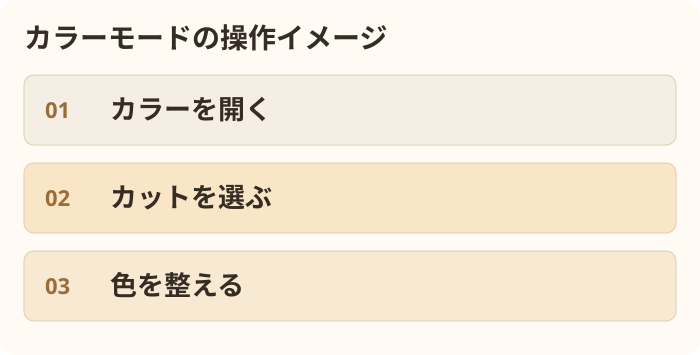
① 画面上部の「カラー」を選択 → ② 下の一覧からカットを選択 → ③ 色や明るさを調整。複数のカットをグループにすると、一緒に調整できます。
たとえば、2台のカメラで撮った対談動画なら、同じカメラのカットをまとめて色味をそろえられます。スタイルのプリセットも調整できます。
①「エフェクト」パネルを開く → ②「ビデオエフェクト」→「カラー補正」→「Lumetriカラー」をクリップに適用 → ③「エフェクトコントロール」または「プロパティ」で調整。
AIアシスタントに編集準備を頼める 製品版に搭載・機能はベータ
Premiere 27の製品版から、素材整理や文字起こし、粗編集の下準備を文章で頼めます。AIアシスタントの機能自体はベータです。
フォルダ作成や素材整理は自分で操作することが中心でした。AIアシスタントは2026年6月からPremiere Betaで先行提供されていました。
「素材を整理して」「選んだクリップを順番に並べて」と伝え、複数の操作をAIに頼めます。
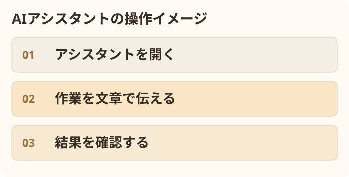
①「ウィンドウ」→「アシスタント」を開く → ② 権限設定で「常に許可を求める」を選ぶ → ③「素材をシーンごとに整理して」などと入力 → ④ AIの操作と結果を確認。
Adobeのデモでは、複数カメラの映像と音声を同期したり、複数カットへまとめて効果を適用したりする例も紹介されています。できる作業は利用環境や更新によって変わります。
いつもの手順を「Skills」として保存 AIアシスタントの機能
毎回同じ指示を入力しなくても、編集準備のルールを呼び出せます。
素材の分け方や名前の付け方を、毎回AIに説明する必要がありました。
手順を「Skill」として保存し、必要なときに呼び出せます。PremiereのAIアシスタント向けの機能です。
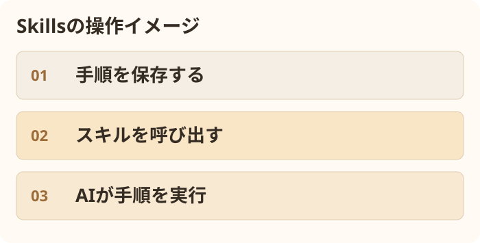
① アシスタント右上から「Skills」→「Open Skills folder」を開く → ② 手順を記した SKILL.md を所定のフォルダに保存 → ③ アシスタントで /名前 の形で呼び出す。
例えば「インタビュー・Bロール・音声のフォルダを作り、既存素材は消さない」といったルールを保存できます。Codex等のSkillsと似た形式ですが、そのまま互換とは限りません。Adobeの指定に合わせる必要があります。
画像をPremiereの中で生成 27.0
生成した画像を外部サービスで作り、Premiereに読み込むことが多かった。
タイムライン上で画像の置き場所を選び、文章から画像を生成できます。
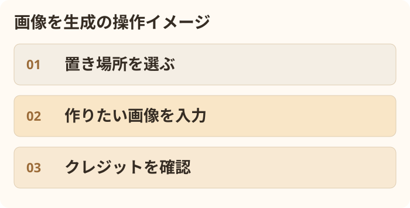
① ツールパネルの「生成メディアツール」を選択 → ② 映像トラック上で範囲をドラッグ → ③「画像を生成」を選んで内容を入力 → ④ クレジットを確認して生成。
例：「木の机に置かれたノートパソコン、やわらかい朝の光」。生成結果は映像に追加して編集できます。
動画・効果音の生成自体は26.5から提供。27.0では画像などが追加されました。公式手順
BGMや効果音をその場で作る 27.0
BGMを外部の音源サイト等で探して読み込んでいました。効果音生成は26.5にもありました。
文章からBGMを生成でき、効果音も映像の動きに合わせて作れるようになりました。
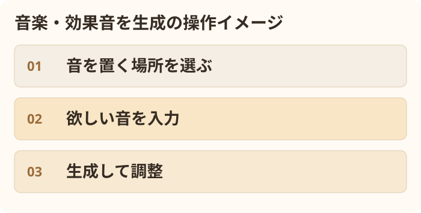
① 生成メディアツールで音声トラックの範囲を選択 → ②「音楽を生成」または「サウンドエフェクトを生成」 → ③ 欲しい音を文章で入力 → ④ クレジットを確認して生成。
効果音では「ビデオに同期」をオンにすると、映像の動きに合う音を作ることができます。Adobeは生成音楽をロイヤリティフリーと案内していますが、案件やモデルごとの利用条件は確認してください。
映像に合う環境音をまとめて作る 27.0
街のざわめきや足音などを探し、タイムラインに一つずつ並べることが多かった。
映像をもとに、背景の音と手前の効果音を複数のトラックに生成できます。
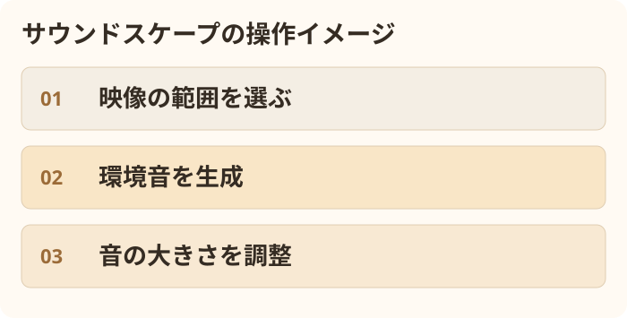
① 生成メディアツールで必要な範囲を選択 → ②「サウンドスケープを生成」 → ③ 対象映像とクレジットを確認して生成 → ④ 各音の音量を調整。
例：街の映像に街のざわめきや動きに合う音を足す。Adobeの説明では最大15秒の映像を解析します。実際の現場音を復元する機能ではなく、新しい音を作る機能です。
音声を「声・音楽・環境音」に分けて整える 27.0
「スピーチを強調」で声を聞きやすくすることはできましたが、混ざった音を個別に扱うには別の手間がかかりました。
「オーディオを強調」で、声・音楽・環境音・効果音のバランスを個別に調整できます。
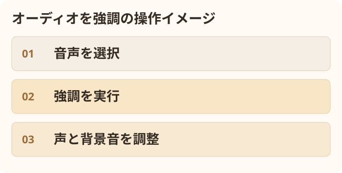
① 音声クリップを選ぶ → ②「プロパティ」→「オーディオ」→「オーディオを強調」 → ③ 解析後に声や背景音の量を調整。必要なら「クリップに分割」で別トラックにできます。
例：インタビューの声は残し、後ろで流れている音楽だけを小さくする。仕上がりは元の音と聞き比べて確認します。
重なった2人の声も分けられる
1本に録音された2人の声が重なると、片方だけの調整が難しかった。
「クロストークを分離」で、2人の声を別々のトラックに分けられます。
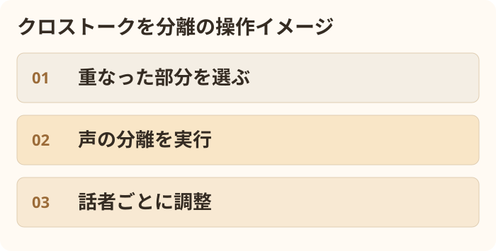
① 声が重なる部分を切り出す → ② 音声クリップを1つ選ぶ → ③ メニューの「クリップ」→「クロストークを分離」を選ぶ → ④ 表示されるコストを確認して実行。分離後、話者ごとのクリップが作られます。
会話に合わせてBGM音量が自動で追従 27.0
会話中にBGMを下げる「自動ダッキング」はありましたが、編集後に調整を作り直す必要がありました。
クリップの移動やカットに合わせ、BGMを下げるタイミングが自動更新されます。
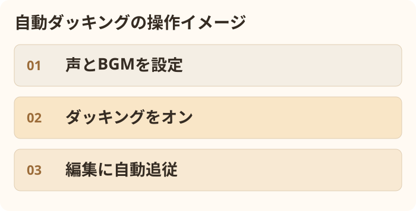
① エッセンシャルサウンドで声を「会話」、BGMを「ミュージック」に設定 → ② BGMの「ダッキング」をオン → ③「自動更新キーフレーム」をオンにする。
エフェクトを付ける前に動きを確認 27.0
エフェクトの名前だけでは効果がわからず、クリップに付けて試すことがありました。
エフェクトパネルで動く見本を確認。対応する映像エフェクトは自分の映像でもプレビューできます。
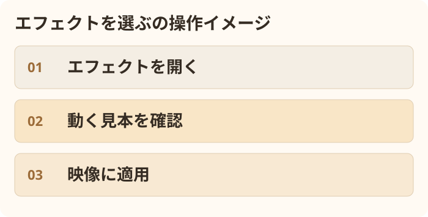
①「ウィンドウ」→「エフェクト」 → ② 気になる効果にカーソルを合わせる → ③ 必要なら「Preview from Source」をオン → ④ 気に入った効果をクリップへ。
音声エフェクトの視覚プレビューはありません。他社製エフェクトでは動作が異なる場合があります。
新しいエフェクトが8種類追加
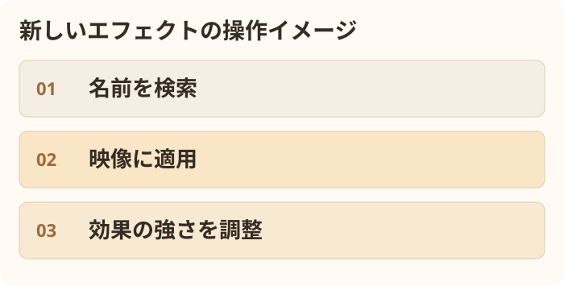
例えば、立体的な縁を付ける「ベベルアルファ」「ベベルとエンボス」、色数を減らす「ポスタリゼーション」、動きのある「放射状ぼかし」「ズームブラー」などがあります。Adobeの正式版案内で名称を確認できたのはこの5種類です。
Adobeは27.1ベータ版で「Fill」「Gradient Tint」「Hue/Saturation」を含む8種類も紹介していますが、これらが27.0正式版の残り3種類と同じかは確認できていません。
エフェクトパネルで名前を検索 → 映像にドラッグ → プロパティなどで強さを調整。
効果の設定が見やすくなった
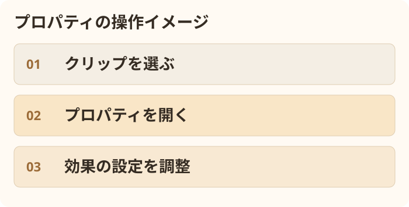
映像・音声エフェクトとマスクを「プロパティ」パネルでカード表示でき、設定を見つけやすくなりました。以前の「エフェクトコントロール」も利用できます。
色で範囲を選べる「HSLマスク」 27.0
範囲を手で囲んだり、色調整用の機能で色を絞ったりしていました。
映像の色をクリックして、その色に近い部分をマスクとして選べます。
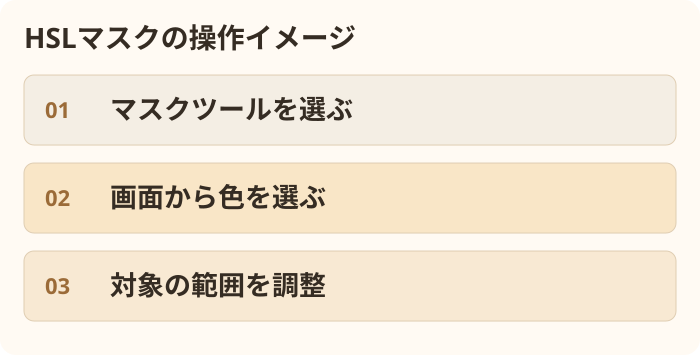
① ツールバーのマスクツールを長押し → ②「HSLマスク」を選ぶ → ③ 画面の色をクリック → ④ プロパティで選ぶ範囲を調整。
例えば青空に近い色を選んで、その部分にだけ補正をかけられます。同じ色が映像の別の場所にあると、そこも選ばれるため確認が必要です。
人物・物の追跡も改善
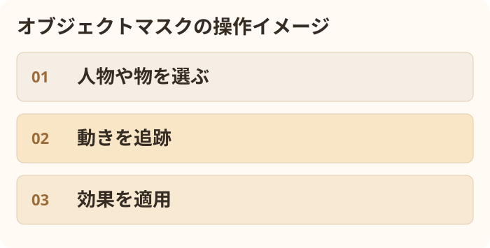
26.0から使えるオブジェクトマスクは、27.0で追跡やファイル管理が改善。人を選び、動きに合わせて追いかける作業がより扱いやすくなりました。
いつもの編集も、ここが変わった 27.0
つなぎに足りない映像をAIで補う
トランジションを入れるとき、クリップの前後に余分な映像が足りない場合がありました。
必要な映像を「生成延長」で作り、つなぎに使えるようになりました。
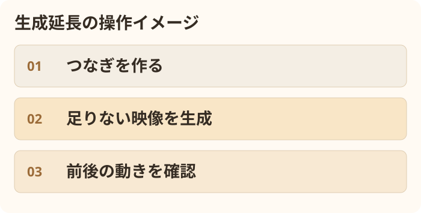
トランジションを入れ、映像不足の際に生成延長の選択肢が出たら、必要クレジットを確認して生成。前後の動きを再生して確認します。
録音中の波形が見える
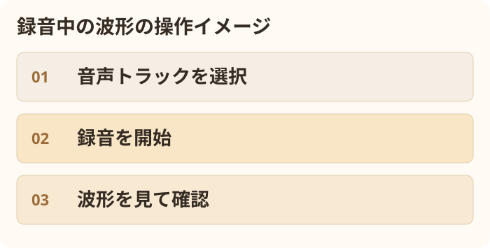
ボイスオーバーなどを録音すると、録音中からタイムラインに波形が表示されます。音が入っているか、その場で見やすくなりました。
速度を変えた音が調整しやすい
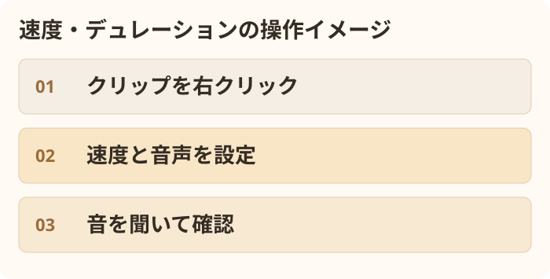
クリップを右クリックして「速度・デュレーション」を開くと、速度と音声のピッチを同じ画面で調整できます。速度とピッチの連動を解除すれば、それぞれを別々に設定することも可能です。従来も「オーディオのピッチを維持」は使えましたが、27.0では設定画面が刷新され、音声の伸ばし方やピッチの調整が充実しました。
収録音の情報が見える
音声に記録されたiXML情報を、タイムラインやソースモニターで確認できるようになりました。表示される内容は収録ファイルによります。
動画の映り込みをAIで消す Premiere Beta
マイクや通行人など、映像に入った不要なものを選んで消せます。
映り込んだ物を消すには、After Effectsなどを使って手間をかける場合がありました。
Premiere Betaの「生成AI削除」で、消したい範囲を指定し、背景をAIで補えます。
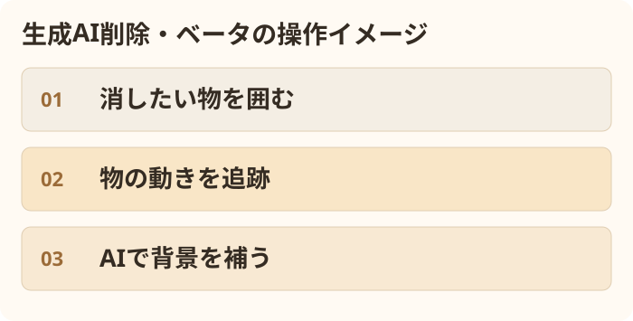
① Premiere Betaでクリップを選択 → ② 消したい物をマスクで囲む → ③ 動きに合わせてマスクを追跡 → ④「Remove」を選び、表示されたクレジットを確認して実行。
Adobe純正MCPで、外部AIから編集へ 2027年初めに限定ベータ予定
Adobeは、外部のAIからPremiereなどを操作する仕組みを発表しました。
Premiere内のAIアシスタントや、別途用意した外部の連携ツールを使う方法がありました。
Adobe純正のローカルMCP連携により、外部AIからPremiereのプロジェクトを扱う構想が示されました。
AIがアプリやサービスとやり取りするための共通の仕組みです。たとえば、AIに作業を頼むと、対応したツールを通じてPremiereの編集データを操作できるようになります。
Adobeの発表では、PremiereのほかPhotoshop・Illustrator・After Effectsが対象。AIがパソコン内の編集可能なプロジェクトを変更し、人があとから修正できると説明されています。
たとえば将来のイメージ：AIに「素材を整理して、対談の編集準備をして」と頼み、Premiereのビンやシーケンスを作業してもらう。ただし、具体的にどの操作が使えるかは発表時点では未確定です。
PremiereのAIアシスタントはアプリ内から使う機能。Adobe純正MCPは、外部AIとAdobeアプリをつなぐための今後の仕組みです。
アップデート前に知っておきたいこと
27で保存した案件
Premiere 27で保存したプロジェクトは、26ではそのまま開けません。更新前のプロジェクトを別に残しておきましょう。
26を残したまま更新
Creative CloudのPremiereの詳細設定で「以前のバージョンを削除」のチェックを外すと、旧版を残せます。
Macの対応条件
Premiere 27はAppleシリコン搭載MacとmacOS 15以降が対象。Intel Macは非対応です。
Windowsの対応条件
公式の最低要件はWindows 11 24H2以降。対応GPUも必要です。Windows Server等は別途、Adobeの案内を確認してください。
使った人・デモを見た人の反応
公開直後のため、正式版の感想に加えて、先行するベータ版の声も含みます。限られた投稿からの傾向で、すべての利用者に当てはまるものではありません。
カラーモード
カットを見渡せる専用画面や、複数カットの色をまとめて調整できる点に期待。一方、以前のLumetriの操作やカーブに慣れた人からは、操作を覚え直す必要があるという声も。
AIアシスタント
素材整理や複数カメラの同期を任せられるデモへの期待。ベータ版では、文字起こしの精度が安定しないという報告や、クレジット費用を気にする声もあります。
音声の調整
声と背景音を別々に扱える点は、インタビューや対談で便利という声。音が不自然にならないか、元音と聞き比べる必要もあります。
映り込みの削除
マイクや車などをPremiere内で消せることに注目。複雑な動きや背景での仕上がりは、実素材ごとに確認が必要です。
X・YouTube・noteも検索しました。Adobe MAX直後の実演や記事はありますが、正式版27.0の長期使用感を十分な数で比較できる段階ではありません。
もっと詳しく知りたいとき
今回の変更を確認した主な資料です。公式の説明と、発表・デモを取材した記事を合わせて確認しました。
- Adobe：Premiere 27.0 リリースノート
- Adobe：画像付き新機能一覧
- Adobe MAX：AIアシスタントとMCPの公式発表
- Adobe MAXのPremiereデモ取材 ／ 新機能・デモの解説
- カラーに関する正式版コミュニティ ／ カラーモードのベータ版の反応 ／ 音声強調のベータ版の反応
- Adobe公式：カラーモード動画 ／ note：Fireflyの音楽・効果音（ベータ時点の記事）
AI生成・音声分離には機能ごとの利用条件があります。画面に表示されるクレジットや処理条件をご確認ください。